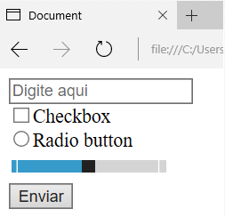

Formulários são normalmente utilizados para integrar a página HTML a algum processamento no lado servidor. Nesses casos, a página envia dados para uma aplicação (Java, PHP, .NET etc.), que os recebe, trata e retorna algum resultado. No HTML, geralmente usamos a tag form para delimitar a área na qual se encontram os campos a serem preenchidos pelo usuário, a fim de serem enviados para processamento no back-end (enquanto a página HTML é chamada de front-end da aplicação). A Listagem 12 mostra um exemplo de formulário com vários tipos de campos para entrada de dados e um botão para submetê-los ao servidor. Na Figura 8 vemos seu resultado.
Resultado:
